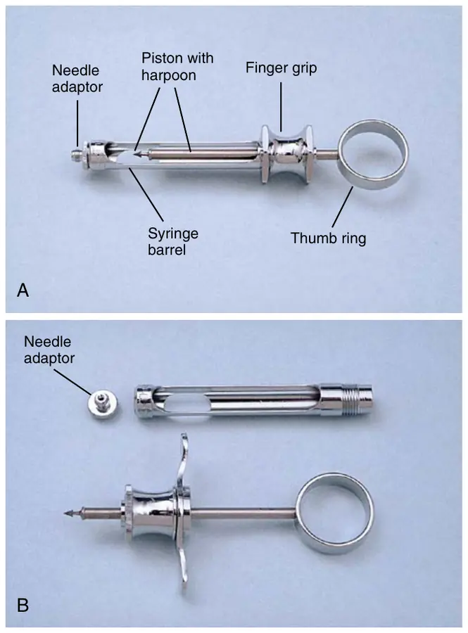
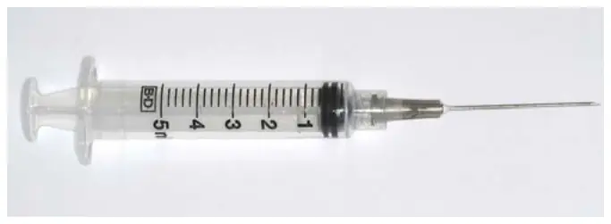

نسخه استخراجشده؛ ترجمه یا تأیید علمی انجام نشده است. وضعیت: captured
دانشجوی سال چهارم پیش از اولین IANB سرنگ فلزی بخش را برداشته است. کارپول را جا انداخته، ولی مطمئن نیست این سرنگ اصلاً میتواند آسپیره کند یا نه. به کجای سرنگ نگاه کند؟

رایجترین سرنگ دندانپزشکی، سرنگ فلزی کارپولی breech-loading است؛ یعنی کارپول از کنار بدنهی سرنگ جا میرود. بیشتر این سرنگها از برنج با روکش کروم و فولاد ضدزنگ ساخته میشوند.
وقتی حلقهی شست را آرام عقب میکشی، هارپون لاستیک را با خود میکشد و در کارپول فشار منفی میسازد. اگر نوک سوزن درون رگ باشد، خون به کارپول میآید و دیده میشود. فشار رو به جلو، محلول را هر جا که نوک سوزن باشد میریزد.
سرنگ بدون هارپون (non-aspirating) خطر تزریق داخل رگ را بیجهت بالا میبرد و برای بیحسی موضعی به کار نمیرود. استاندارد مراقبت، سرنگ آسپیرهکننده است.
سرنگ بیحسی خوب چهار ویژگی دارد:

یک کارپول پر در سرنگ بگذار و آن را مثل هنگام تزریق بگیر. اگر انگشتهایت تا آخر باز شدهاند و نمیتوانی حلقهی شست را کمی عقب بکشی، آسپیراسیون مطمئن ممکن نیست. سرنگ با حلقهی شست کوچکتر یا پیستون کوتاهتر برای دست کوچک ساخته شده است؛ حدود دو سوم دانشجویان (۶۲٫۲٪) سرنگ کوچک را به خاطر کنترل بهتر ترجیح میدهند.
اشتباه رایج: کشیدن تند و زیاد حلقهی شست. این کار هارپون را از لاستیک بیرون میکشد. عامل اصلی آسپیراسیون مطمئن گیج سوزن است، نه نوع سرنگ؛ با سوزن گیج ۲۵ آسپیراسیون مطمئنتر است.